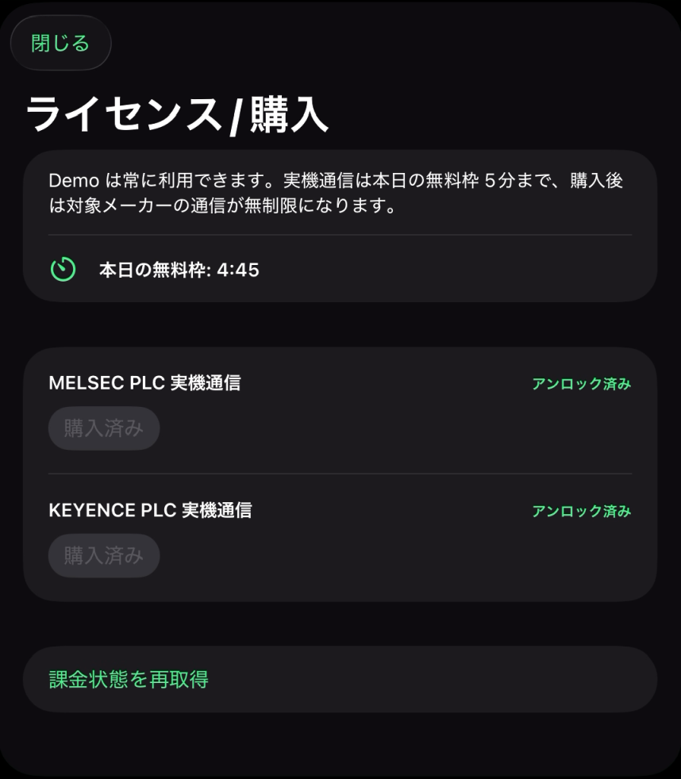

License
ライセンス/購入
未購入時の接続制限と、MELSEC / KEYENCE 別ライセンスの見方です。

画面概要
開き方
右上メニューから ライセンス/購入 を開きます。
目的
実機通信の購入状態と、未購入時の接続制限を確認します。
DEMO
PLC 実機に接続しない確認用です。購入状態や無料枠にかかわらず、常時無料で利用できます。
未購入時の無料枠
購入していないメーカーの実機通信について、MELSEC と KEYENCE を合計して、1 日 5 分まで利用できます。
時間切れ
無料枠を使い切ると、購入していないメーカーの実機通信はその日は利用できません。継続するには対象メーカーのライセンス購入が必要です。
MELSEC 実機通信
購入後、MELSEC の実機通信が無制限になります。
KEYENCE 実機通信
購入後、KEYENCE の実機通信が無制限になります。
価格
App Store / Google Play の表示を正とします。
購入方式
実機通信アンロックは、MELSEC / KEYENCE のメーカー別に購入する買い切り型（非消耗型）のアプリ内購入です。サブスクリプションではないため、定期的な料金は発生しません。
MELSEC 実機通信と KEYENCE 実機通信は別の商品です。一方を購入しても、もう一方の実機通信は解除されません。
購入可否、価格、提供地域は App Store / Google Play の表示を正とします。
購入状態の復元とOS間の扱い
同じ OS で同一のストアアカウントを使用する場合は、アプリの購入管理機能から購入済み状態を復元できます。購入状態の確認や復元は、各ストアアカウントとストアの仕組みに従います。
App Store で購入した利用権は iOS 版でのみ、Google Play で購入した利用権は Android 版でのみ利用できます。iOS 版と Android 版の間で購入状態を引き継ぎ、移行、または復元することはできません。両方の OS で利用する場合は、それぞれのストアで購入が必要です。
実機通信できない場合
ライセンス/購入で購入状態を確認します。未購入時の接続時間を超えている場合、対象メーカーの実機通信には購入状態が必要です。